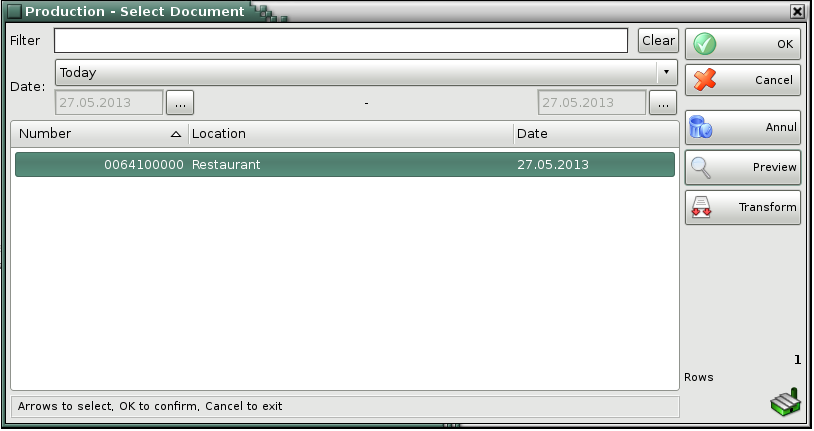
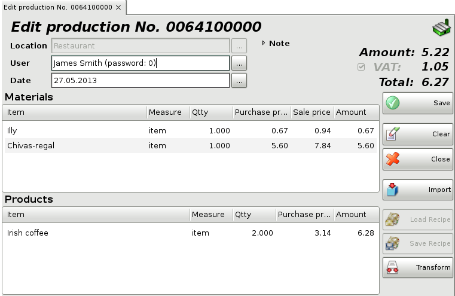

Edit production
In the Production � select document window select the document you wish to edit or print and click the OK button.

Use the Edit production window to edit or delete an existing production.
The Filter option allows you to quickly position on a particular document by typing its number or by typing all or part of the location�s name. To remove specified filter click on the Clear button.

The Location field allows you to edit the name of the location, in which recipes have been produced. You can visualize the list by pressing the F4 key.
The User field allows you to edit the name of the user, who has performed the production. You can visualize the list by pressing the F4 key.
The Item field allows you to edit the name of a particular material or product. You can visualize the list by pressing the F4 key. Then you can save the current production materials and products into a new recipe by pressing the Save Recipe button.
To add a new recipe, insert a new row in products table by pressing the Enter key and then press Load Recipe button.
You can type a new value in the Qtty field if you wish to modify the current quantity.
To remove a particular item form the document, change its quantity to zero. To cancel the entire document, set all quantities to zero.
Double-click the document date if you wish to change it. In the Calendar window select a date (by double-clicking it or by pressing the OK button). After you close the Calendar the new date appears in the Edit production window.
Press the F9 key to save the document.
�2006-2015 Microinvest, All rights reserved